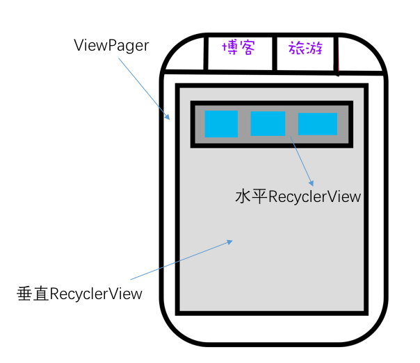

仿网易新闻Android端APP实现
Wed, Apr 6, 2016 标签： Development Android主要功能展示和代码实现
2015年10月份左右，差不多花了一周的时间，实现了一个粗略版本。
截止目前，实现了包括新闻下的包括头条、体育、娱乐的一系列的新闻展示，以及点击后进入的新闻详情展示。
目前效果
- 目前效果：
更新：
2017-01-18 趁着寒假，解决历史遗留的复杂嵌套布局滑动冲突；完成基于自定义Volley的内容预加载而后响应网络回调。
2015-XX-XX 新闻内容的详情展示已经实现
技术实现
滑动标签
APP总体底部的4个Fragment切换和在每个Fragment中的ViewPage切换, 采用的是LuckyJayce/ViewPagerIndicator的开源框架：地址是ViewPagerIndicator。
当然,若是初次接触，建议学习SlidingTabsBasic,Google官方教程，简洁实现SlidingTab。
列表实现
新闻列表采用纵向RecyclerView，其中暂时划分为3种类型。
public static enum ITEM_TYPE {
ITEM_TYPE_BANNER,
ITEM_TYPE_IMAGE,
ITEM_TYPE_TEXT
}
分别表示以下3种类型：
- BANNER：

- TEXT：

IMAGE：

ITEM_TYPE_BANNER 采用自定义SwitchImage控件
ITEM_TYPE_TEXT 相对布局
ITEM_TYPE_IMAGE 水平RecycleView （官方版本为三张图片）
水平列表效果
本部分介绍ITEM_TYPE_IMAGE的水平滑动列表如何实现。

经过一番努力，现已实现了列表能够响应以下三种情景：
- 滑动ITEM_TYPE_IMAGE时：
会先根据滑动夹角判断是水平滑动还是上下滑动。
- 如果是水平滑动。滑动时，水平列表滑动。如果水平列表滑动尽头，也不会触发新闻栏目的切换。
- 如果是垂直滑动。则相应整个列表的上下滑动。
- 如果用户滑动很短距离（很短时间）就抬起手指，则触发点击事件。
水平列表事件冲突处理
1. 实现方式
水平滑动的处理方式一般有ViewPage，Gallery，HorizontalScrollview等几种。
这里采用在垂直RecycleView中嵌套水平RecycleView。 主要的布局结构是这样的：

2.存在问题
如果不进行如何额外的处理，那么看上去一些正常。但是每次将水平列表滑动尽头并继续滑动时，会触发Viewpage的页面切换。
趁着寒假，已经把这个问题分析处理了。 解决过程和思路完全复盘，值得一看！
但是当我想对水平RecyclerView中的某张图片进行点击时，出现了onClick函数没有回调的问题，由于笔者水平和时间有限，暂时没有深究这个问题。
于是采用了onTouch函数做点击响应的回调, 做了如下简单的判断：
用户是点击图片还是水平滑动RecyclerIView
imageView.setOnTouchListener(new View.OnTouchListener() {
@Override
public boolean onTouch(View v, MotionEvent event) {
//抬起按钮时判断，之前是否滑动了,若没有滑动则响应点击事件
if (event.getAction() == MotionEvent.ACTION_UP && !isMoved)
mListener.onViewPageTouch((NetworkImageView) v, index);
else {
isMoved = false;
}
if (event.getAction() == MotionEvent.ACTION_MOVE) {
isMoved = true;
}
return true;
}
});
基于自定义Volley预加载和回调刷新
目前效果
首次打开APP时，先显示缓存内容，然后同时请求网络，显示最新内容。
最简单的实现方案
一般的话，可能会使用数据库之类的存储结构来保存历史新闻。但是，我想简化这个过程，依赖于网络请求框架的缓存来实现。
一开始想的是给修改Volley源码，为Response.Listener(T response)接口增加一个回调方法onCacheHit(T response)方案,如以下代码所示。
public interface Listener<T> {
/** Called when a response is received. */
public void onResponse(T response);
/** 存在缓存 */
public void onCacheHit(T response);
}
不过，经过阅读Volley的源码，发现可以通过修改一个Response的softTTL和TTL来实现以上想法。
于是根据这个想法，修改出了一个HandyVolley的框架，使用文档见于此处–HandyVolley，并发布于Jcente仓库中：
compile 'site.okhttp.codeyel:HandyVolley:1.0.3'
顶部沉浸式状态栏实现
参考了这篇文章： http://www.jianshu.com/p/f8374d6267ef
新闻详情实现
首先，根据网络返回的数据的样式确定解析方案：
NewsDisplayActivity.java第70行，展示了一个返回数据Html格式的样例：https://github.com/freedomofme/Netease/commit/bb6db85de547d4d5243e17e881bc2116122e52d6
本文采用的方法是通过Android自带的android.text.Html类解析Html和html下标签的图像。
核心代码如下：
URLImageParser p = new URLImageParser(content, this);
Spanned htmlSpan = Html.fromHtml(body, p, null);
content.setText(htmlSpan);
其中的URLImageParser是用来解析标签的，这里有很大的进一步优化的空间。
这类主要是参考该文，并修正了图片尺寸上的问题。http://stackoverflow.com/questions/15617210/android-html-fromhtml-with-images/15617341#15617341
当然，除了用TextView来展示Html（在Android 中就是Spanned类），也可以使用WebView。 两者的主要区别： * WebView：加载HTML更为方便（笔者觉得），支持的标签更多，与APP交互需要通过JS接口 * TextView： 除了文本显示，对于其他很多交互行为，需要重写函数。开发者对展示细节的控制能力更强。 详细内容可以参考:这里
数据请求与相应
采用的是Volley框架，并封装了RequestSingletonFactory工厂类来方便请求。 URLs类中采用反射的方式来读取静态URL的数据。
接下来
- 完善新闻阅读的排版，对于部分网页存在数据不兼容，导致解析的Bug
- 增加查看新闻评论功能
- 增加用户设置界面
下载地址
本项目将在持续更新，更加完善，项目源码地址： https://github.com/freedomofme/Netease
本开源项目仅供学习，不得作为其他用途